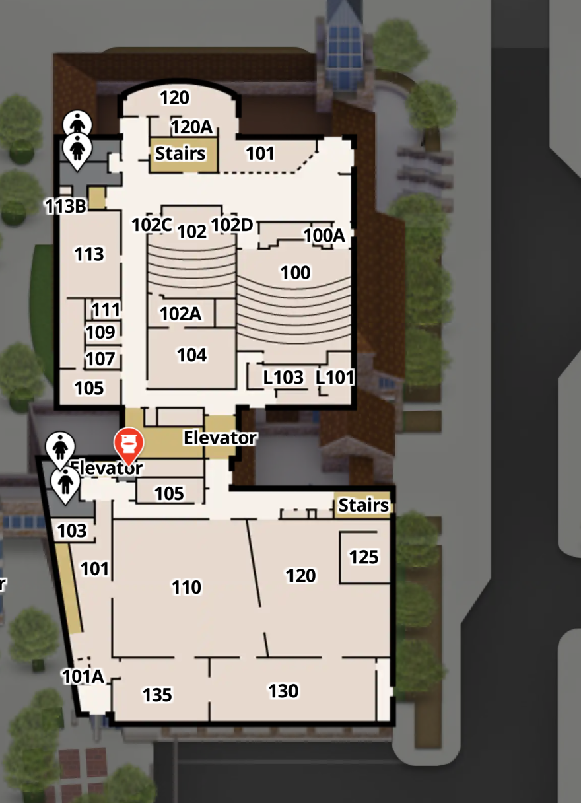

BLOW THINGS UP
About
The ATLAS BTU Lab is an inclusive community makerspace facilitating projects at the intersection of Art, Design, Engineering and Architecture. It serves multiple functions as a general workspace, and workshop host.
Who is invited?
Anyone can gain access to BTU. Our goal is to provide the most diverse, inclusive environment for makers of all types in a highly experimental and productive space.
How to join?
New members must attend a 20 minute general orientation covering community expectations, safety and equipment.
To access the BTU's 3d printers, laser cutters, and woodshop, members must also attend seperate, specialized orientations.
Orientation dates can be found on the calendar page along with other scheduled BTU events.
Location

The BTU Lab's main room is located in room 113 of the ATLAS building.
The ATLAS building's address is 320 UCB, 1125 18th St, Boulder, CO 80309
Contact us
If you have any questions, please email us at atlasbtulab@gmail.com.
Instagram: @btulab_cu